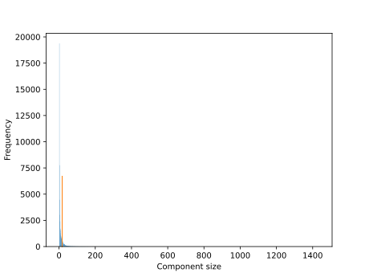
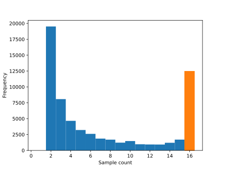
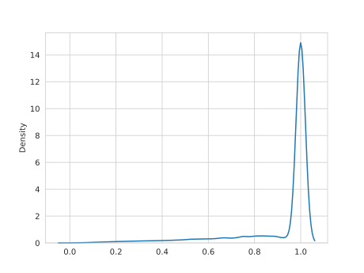
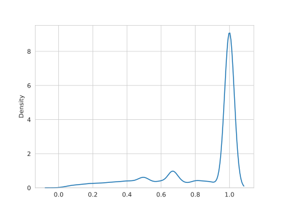
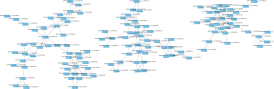

Command line script usage
This document explains how to use each of the scripts that are part of
RNA-clique. Short help messages can also be printed for most of these scripts by
providing the scripts with the --help option.
build_graph.py
This script builds the gene matches graph from gene matches tables.
Options
| Short name | Long name | Description | Default | Required |
|---|---|---|---|---|
-h |
--help |
Print a help message and exit. | No | |
-i |
Gene matches table HDF5 or pickle files. | Yes | ||
-o |
Output gene matches graph pickle. | Yes |
do_filtering_step.sh
This script automates "phase 1" of RNA-clique in which the following steps occur:
- The top \(n\) genes for each sample are selected by \(k\)-mer coverage.
- The gene matches tables are found by executing a BLAST search for each pair of samples in both directions. (That is, for samples \(a\) and \(b\), we BLAST both \(a\) vs. \(b\) and \(b\) vs. \(a\).)
- The gene matches graph is constructed from the gene matches tables.
This script offers many command line options for controlling the behavior of
RNA-clique. For most analyses, most of these options are probably
unnecessary. Hence, it is recommended to use the
typical_filtering_step.sh script instead unless
fine-grained control is needed.
Positional arguments
| Argument name | Description |
|---|---|
DIR ... |
Each argument is a directory containing a transcripts FASTA file to be analyzed (transcripts.fasta, by default). |
Options
| Option name | Description | Default | Required |
|---|---|---|---|
--cache-dir |
Directory in which to store BLAST DBs for top \(n\) genes. | No | |
--evalue |
e-value cutoff to use for BLAST searches | 1e-99 (\(10^{-99}\)) |
No |
--gene-regex |
Python regex used to extract gene and isoform IDs from FASTA sequence headers. | ^.*g([0-9]+)_i([0-9]+) |
No |
--help |
Display a help message and quit. | false | No |
--jobs |
Number of parallel jobs to use. | 1 | No |
--keep-all |
Whether to keep all matches in the case of a tie in the last step of creating the gene matches table. | false | No |
-N |
A match between genes is counted if it is among the top \(N\) in both directions. | 1 | No |
-n |
Number of top genes to select by \(k\)-mer coverage. | 10000 | No |
--out-dir-1 |
Directory in which to store top \(n\) genes for each sample. | Yes | |
--out-dir-2 |
Directory in which to store gene matches tables. | Yes | |
--output-graph |
Path to output graph pickle. | Yes | |
--pattern |
Perl regex used to extract \(k\)-mer coverage from FASTA sequence header lines. | ^.*cov_([0-9]+(?:\.[0-9]+))_g([0-9]+)_i([0-9]+) |
No |
--sample-regex |
Python regex used to extract sample names from directory names. | ^(.*?)_.*$ |
No |
--transcripts |
Name of the FASTA files containing transcirpts in the input directories. | transcripts.fasta |
No |
gene-regex
The gene-regex option should be a Python regular expression that can be used
to parse the FASTA sequence header lines of the transcript FASTA files. The
following capture groups are expected:
| Capture group | Description |
|---|---|
| 1 | Gene ID, a non-negative integer |
| 2 | Isoform ID, a non-negative integer |
keep-all
The last step in creating a gene matches table is selecting the top gene pair for each sample 1 gene by bitscore. By default, this step produces a table such that every sample 1 gene in the table is implicitly mapped to a single best match in sample 2. If for some sample 1 gene there are multiple gene pairs with highest bitscore, ties are broken by keeping only the row that comes first in the table.
When the --keep-all flag is provided, more than one gene pair may be kept for
a sample 1 gene in the case of ties.
N (big N)
When comparing sample \(A\) and sample \(V\), we BLAST \(A\) against \(B\) and \(B\) against \(A\). Ordinarily, we keep a pair of genes \(g\) (from \(a\)) and \(h\) (from \(b\)) when merging the results from the two directions if and only if \(g\) is among the best matches for \(h\) in \(A\), and \(h\) is among the best matches for \(g\) in \(B\), according to bitscore. (We allow ties, so \(h\) may not be the only best match for \(g\) in \(B\), and, likewise, \(g\) may not be the only best match for \(h\) in \(A\).) This behavior corresponds to a parameter setting of \(N = 1\) because we are consider only the matches with top \(N = 1\) bitscore in both directions.
We could alternatively set \(N\) to some value greater than 1. In that case, when we merge the two directions, we could keep a pair of genes \(g\) and \(h\) if and only if \(g\) is among the matches with top \(N\) bitscore for \(h\) in \(A\), and \(h\) is among the matches with top \(N\) bitscore for \(g\) in \(B\).
As of this writing, values of \(N\) greater than \(1\) are mostly untested, and it is recommended that this parameter simply be set to \(1\) in practice.
pattern
The pattern option should be a Perl regular expression that can be used to
parse the FASTA sequence header lines of the transcript FASTA files. The
following capture groups are expected:
| Capture group | Description |
|---|---|
| 1 | \(k\)-mer coverage, expressed as a floating-point number |
| 2 | Gene ID, a non-negative integer |
Additional capture groups will be ignored.
sample-regex
The sample-regex option should be a Python regular expression that can be used
to select a string acting as a sample name from the filenames of the FASTA files
created for the top \(n\) genes.
By default, the top \(n\) genes for a transcriptome located at
SAMPLENAME/transcripts.fasta is SAMPLENAME_top.fasta, so the regular
expression ^(.*?)_.*$ works to select the sample name from this filename.
| Capture group | Description |
|---|---|
| 1 | Sample name |
Environment variables
| Variable name | Description | Corresponding argument |
|---|---|---|
SAMPLE_RE |
Python regex used to extract sample names from directory names. | --sample-regex |
filtered_distance.py
This script executes the second phase of RNA-seq, in which pairwise similarities or dissimilarities (distances) are computed from the gene matches tables and gene matches graph.
Options
| Short name | Long name | Description | Default | Required |
|---|---|---|---|---|
-c |
--comparisons |
Paths to gene matches tables. | Yes | |
-e |
--embed |
Start IPython shell after distances have been computed. | No | |
-g |
--graph |
Path to gene matches graph pickle. | Yes | |
-h |
--help |
Print a help message and exit. | No | |
-l |
--print-sample-list |
Print the list of samples before printing the matrices | No | |
-o |
--out-type |
Output type (similarity or dissimilarity). | sim |
No |
-s |
--samples |
Number of sample in the comparison. (Computed automatically if not specified.) | No |
Output format
The script writes the matrix to standard output in a human-readable format using
np.savetxt
with the %s format and spaces as delimiters.
If the --print-sample-list option is provided, the list of samples will be
printed before the matrix.
find_all_pairs.py
This script calculates the gene matches tables for all pairs of samples by BLASTing each sample against every other.
Options
| Short name | Long name | Description | Default | Required |
|---|---|---|---|---|
-D |
--db-cache-dir |
Directory in which to store BLAST DBs for the input FASTA files | No | |
-e |
--evalue |
e-value cutoff to use for BLAST searches | 1e-50 (\(10^(-50)\)) |
No |
-r |
--gene-regex |
Python regex used to extract gene and isoform IDs from FASTA sequence headers. | ^.*g([0-9]+)_i([0-9]+) |
No |
-h |
--help |
Print a help message and exit. | No | |
-i |
--inputs |
Input FASTA files, each containing a sample's top \(n\) genes | Yes | |
-j |
--jobs |
Number of parallel jobs to use. | threads - 1 |
No |
-k |
--keep-all |
Whether to keep all matches in the case of a tie in the last step of creating the gene matches table. | No | |
-n |
--top-n |
A match between genes is counted if it is among the top \(N\) in both directions. | 1 | No |
-O |
--output-dir |
Directory in which to store the output gene matches tables | Yes | |
-R |
--sample-regex |
Python regex used to extract sample names from directory names. | ^(.*?)_.*$ |
No |
Environment variables
| Variable name | Description | Corresponding argument |
|---|---|---|
SAMPLE_RE |
Python regex used to extract sample names from directory names. | --sample-regex |
find_homologs.py
This script computes a genetic distance for a single pair of samples.
Warning: This script should not be used if you are analyzing more than two samples total!
Positional arguments
| Argument name | Description |
|---|---|
transcripts1 |
Path to first (top n) transcripts FASTA file to be analyzed. |
transcripts2 |
Path to second (top n) transcripts FASTA file to be analyzed. |
Options
| Short name | Long name | Description | Default | Required |
|---|---|---|---|---|
-e |
--evalue |
e-value cutoff to use for BLAST searches | 1e-50 (\(10^{-50}\)) |
No |
-h |
--help |
Print a help message and exit. | No | |
-k |
--keep-all |
Whether to keep all matches in the case of a tie in the last step of creating the gene matches table. | No | |
-q |
--quiet |
Don't show the matches found. | No | |
-r |
--regex |
Python regex used to extract gene and isoform IDs from FASTA sequence headers. | ^.*g([0-9]+)_i([0-9]+) |
No |
-f |
--report-float |
Report the distance as a floating point number instead of a fraction. | No | |
-n |
--top-n |
A match between genes is counted if it is among the top \(N\) in both directions. | No |
Output format
By default, find_homologs.py prints the gene matches table followed by the
distance, expressed as a simplified fraction.
The --quiet option may be used to suppress printing the gene matches table,
and the --report-float option may be used to express the distance as a
floating-point number instead of a fraction.
make_subsets.py
This script creates links to gene matches tables and a gene matches graph for a
subset of samples from a previously completed run of RNA-clique (specifically,
phase 1 of RNA-clique). make_subsets.py is useful when you want to compute
distances for a subset of samples that you've already analyzed with
RNA-clique. This script is typically much faster than re-running Phase 1 on a
subset of the input FASTA files since this script does not need to repeat any of
the BLAST searches from the prior analysis.
The symbolic links to the gene matches tables belonging to the subset are placed
in an od2 subdirectory of the specified output directory. The new gene matches
graph is saved in a file named graph.pkl directly under the output directory.
Options
| Short name | Long name | Description | Default | Required |
|---|---|---|---|---|
-h |
--help |
Print a help message and exit. | No | |
-O |
--output-dir |
Directory in which to store links to subset gene matches tables and graph. | Yes | |
-I |
--input-dir |
Directory containing gene matches tables in od2 subdirectory. |
Yes | |
-y |
--include |
A list of samples to include. If none are provided, the list is not used for selecting a subset. | No | |
-Y |
--include-regex |
A regular expression that matches samples to include. | No | |
-r |
--sample-name-regex |
A regular expression for parsing the samples found in gene matches tables into sample names. | (.*)_top\.fasta |
No |
--filter-file |
A file whose lines contain names of samples to include in the subset. | No |
sample-name-regex
Each gene matches table created in Phase 1 of RNA-clique keeps track of the
paths to the files used in the comparison. These are stored in the qsample and
ssample columns of each dataframe.
sample-name-regex is a regular expression used to transform these basenames of
the file paths back into sample names. The capture groups of this regular
expression are as follows:
| Capture group | Description |
|---|---|
| 1 | Sample name |
Since select_top_sets_all.sh saves the sequences for the top \(n\) genes of a
sample named $sample_name in a file named ${sample_name}_top.fasta, the
default setting for this parameter is (.*)_top\.fasta.
plot_component_sizes.py
Despite its name, plot_component_sizes.py offers a variety of features useful
for working with gene matches graphs:
- Visualizations
- Component size histogram
- Represented sample count histogram
- Sample count to component size ratio KDE plot
- Component density KDE plot
- Graphviz export
- Data export
- Cytoscape JSON
- GraphML
- Statistics
- Ideal components
- Large components
- Total components
Positional arguments
| Argument name | Description |
|---|---|
graph |
Path to the pickled gene matches graph. |
Options
| Short name | Long name | Description | Default | Required |
|---|---|---|---|---|
-d |
--density-plot |
Output path for KDE plot of component density. | No | |
-x |
--export |
Output path(s) for export to GraphML or Cytoscape JSON. | No | |
-g |
--graphviz |
Output path for Graphviz (dot) format export. | No | |
-h |
--help |
Print a help message and exit. | No | |
-r |
--ratio-plot |
Output path for KDE plot of represented samples divided by component size. | No | |
-s |
--size-plot |
Output path for histogram of component sizes. | No | |
-S |
--sample-plot |
Output path for histogram of represented samples. | No | |
--samples |
The number of samples in the analysis. If not specified, this is computed automatically. | No | ||
--statistics |
Print statistics in the specified format (human or machine-readable). | No |
Visualizations
plot_component_sizes.py can produce several different plots relating to
components of the gene matches graph.
Component size histogram
This plot shows the distribution of sizes among connected components of the gene matches graph.
For most sizes, the bar in the histogram is drawn in blue. For the case where the size is exactly the number of samples, the bar is drawn in orange. Since a gene must match some other gene to be included in the gene matches graph, no bar is shown for the case where the size is 1.

Represented sample count histogram
The number of samples represented in a connected component is the number of distinct samples to which genes in the component belong. For a given component, the number of represented samples is necessarily between 1 and the number of samples in the analysis.
This plot shows the distribution of number of represented samples among connected components in the gene matches graph.
For represented sample counts , the bar in the histogram is drawn in blue. For the case where the represented sample count is exactly the number of samples, the bar is drawn in orange. Since a gene must match some other gene in another sample to be included in the gene matches graph, no bar is shown for the case where the represented sample count is 1.

Sample count to component size ratio KDE plot
This plot shows the distribution of represented samples divided by component size for the components in the gene matches graph. Since this ratio can take on many fractional values, kernel density estimation is used to plot the distribution.

Component density KDE plot
This plot shows the distribution of component density for the gene matches graph, where density is computed as the number of edges that exist in the component divided by the number of edges that would exist if the component were complete. Since the density can take on many fractional values, kernel density estimation is used to plot the distribution.

Graphviz
plot_component_sizes.py can optionally export the entire gene matches graph to
a Graphviz ("dot") file. In principle, this file could
be used to draw the full gene matches graph via one of the Graphviz layout
programs (e.g., neato, circo, etc.), but, in practice, gene matches graphs
are often too large to draw with Graphviz, even for small analyses involving
only four samples.
The function is included in case plotting some subgraph might be useful. The Graphviz export may also be practical for analyses with only three samples, but this is untested.
Data exporters
Cytoscape JSON
Export to the cyjs JSON format used by Cytoscape.
Currently, this exporter does not appear to function properly, as Cytoscape complains upon importing the graph that "source node is not a member of the network." For now, we recommend using the GraphML export format, which is also understood by Cytoscape.
Example
{
"data": [],
"directed": false,
"multigraph": false,
"elements": {
"nodes": [
{
"data": {
"id": "('SRR6847395_out_top.fasta', 6)",
"value": [
"SRR6847395_out_top.fasta",
6
],
"name": "('SRR6847395_out_top.fasta', 6)"
}
},
{
"data": {
"id": "('SRR6847395_out_top.fasta', 5289)",
"value": [
"SRR6847395_out_top.fasta",
5289
],
"name": "('SRR6847395_out_top.fasta', 5289)"
}
},
// ...
],
"edges": [
{
"data": {
"source": [
"SRR6847395_out_top.fasta",
6
],
"target": [
"SRR6847396_out_top.fasta",
0
]
}
},
{
"data": {
"source": [
"SRR6847395_out_top.fasta",
5289
],
"target": [
"SRR6847396_out_top.fasta",
48
]
}
},
// ...
]
}
}
GraphML
plot_component_sizes.py can export to GraphML, an XML-based format for
describing graphs.
Example
<?xml version='1.0' encoding='utf-8'?>
<graphml xmlns="http://graphml.graphdrawing.org/xmlns" xmlns:xsi="http://www.w3.org/2001/XMLSchema-instance" xsi:schemaLocation="http://graphml.graphdrawing.org/xmlns http://graphml.graphdrawing.org/xmlns/1.0/graphml.xsd">
<graph edgedefault="undirected">
<node id="('SRR6847395_out_top.fasta', 6)" />
<node id="('SRR6847395_out_top.fasta', 5289)" />
<node id="('SRR6847395_out_top.fasta', 1672)" />
<!-- More nodes here ... -->
<edge source="('SRR6847395_out_top.fasta', 6)" target="('SRR6847396_out_top.fasta', 0)" />
<edge source="('SRR6847395_out_top.fasta', 5289)" target="('SRR6847396_out_top.fasta', 48)" />
<edge source="('SRR6847395_out_top.fasta', 5289)" target="('SRR6847398_out_top.fasta', 2189)" />
<!-- More edges here ... -->
</graph>
</graphml>

typical_filtering_step.sh
This script wraps do_filtering_step.sh to provide a
simpler user interface and better defaults. Like do_filtering_step.sh, the
purpose of this script is to automate the first phase of RNA-clique.
This script shares many arguments/options with do_filtering_step.sh, but some
have been removed or replaced for simplicity.
Positional arguments
| Argument name | Description |
|---|---|
DIR ... |
Each argument is a directory containing a transcripts FASTA file to be analyzed. |
Options
| Short name | Long name | Description | Default | Required |
|---|---|---|---|---|
--evalue |
e-value cutoff to use for BLAST searches | 1e-99 (\(10^{-99}\)) |
No | |
--gene-regex |
Python regex used to extract gene and isoform IDs from FASTA sequence headers. | ^.*g([0-9]+)_i([0-9]+) |
No | |
-h |
--help |
Print a help message and exit. | No | |
-j |
--jobs |
Number of parallel jobs to use. | threads - 1 |
No |
-N |
A match between genes is counted if it is among the top \(N\) in both directions. | 1 | No | |
-o |
--output-dir |
Directory in which to put intermediate and output files. | Yes | |
--pattern |
Perl regex used to extract \(k\)-mer coverage from FASTA sequence header lines. | ^.*cov_([0-9]+(?:\.[0-9]+))_g([0-9]+)_i([0-9]+) |
No | |
--sample-regex |
Python regex used to extract sample names from directory names. | ^(.*?)_.*$ |
No | |
-n |
--top-genes |
Number of top genes to select by \(k\)-mer coverage. | Yes | |
--transcripts |
Name of the FASTA files containing transcirpts in the input directories. | transcripts.fasta |
No |
Environment variables
| Variable name | Description | Corresponding argument |
|---|---|---|
SAMPLE_RE |
Python regex used to extract sample names from directory names. | --sample-regex |
select_top_sets.pl
This Perl script selects the top genes ("isotig sets") from an assembled transcriptome by \(k\)-mer coverage.
See more details in the documentation for select_top_genes.
select_top_sets_all.sh
This Perl script selects the top genes from multiple assembled transcriptomes in parallel.
See more details in the documentation for select_top_genes.